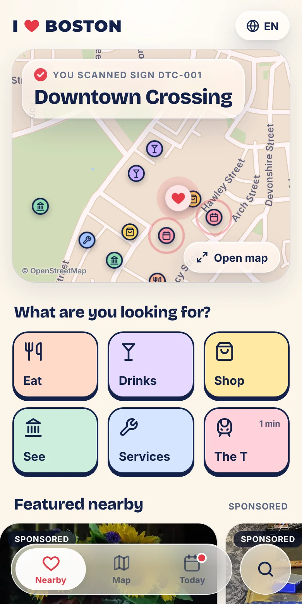

A free neighborhood guide on every corner
I ♥ Boston puts a QR sign where people already stop. One scan opens a fast guide to what's around them: food, shops, sights and the T, in their own language. No app to download, nothing to sign up for.
- What's open nearby, with walking minutes
- Live train times at Downtown Crossing
- Directions from the sign in one tap
- 11 languages, picked from the phone

Why it's good for Boston
The guide speaks their language: English, Spanish, Portuguese, Chinese, French, Vietnamese, Italian, Japanese, Korean, Hindi and Greek.
Every place near a sign gets a free listing. Shops can pay to be featured, and paid spots are always labeled Sponsored.
Live MBTA arrivals right at the sign, and the right line for the places people ask about most, from Logan to Fenway.
Optional featured listings from local businesses pay for it. No public money and no new app to maintain.
No account, and no need for your location: the sign says where it is. We count scans and taps, never people.
Big, clear buttons on any phone with a camera. One scan and it opens; there's nothing to install.
Start small, prove it with numbers
Counter cards and small window stickers inside downtown shops. Each one needs only the owner's OK.
Scans per sign, the categories people tap and the languages they use, shared with the city every month.
A handful of signs at approved spots in Downtown Crossing, placed where the numbers show they help most.
The guide for sign DTC-001 at Downtown Crossing, with sample listings. Works on any phone.